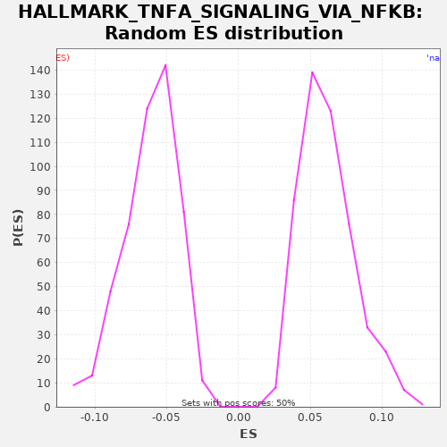

| | | Dataset | X_enriched_genes copy |
| Phenotype | NoPhenotypeAvailable |
| Upregulated in class | na_neg |
| GeneSet | HALLMARK_TNFA_SIGNALING_VIA_NFKB |
| Enrichment Score (ES) | -0.31848896 |
| Normalized Enrichment Score (NES) | -5.226965 |
| Nominal p-value | 0.0 |
| FDR q-value | 0.0 |
| FWER p-Value | 0.0 |
Table: GSEA Results Summary
 Fig 1: Enrichment plot: HALLMARK_TNFA_SIGNALING_VIA_NFKB
Fig 1: Enrichment plot: HALLMARK_TNFA_SIGNALING_VIA_NFKB
Profile of the Running ES Score & Positions of GeneSet Members on the Rank Ordered List
| SYMBOL | RANK IN GENE LIST | RANK METRIC SCORE | RUNNING ES | CORE ENRICHMENT | | 1 | EIF1 | 435 | 0.152 | -0.0174 | No |
| 2 | SOD2 | 548 | 0.129 | -0.0181 | No |
| 3 | SERPINB8 | 1102 | 0.054 | -0.0417 | No |
| 4 | GADD45B | 1107 | 0.054 | -0.0367 | No |
| 5 | EFNA1 | 1298 | 0.040 | -0.0414 | No |
| 6 | PHLDA2 | 2092 | 0.017 | -0.0774 | No |
| 7 | FJX1 | 2167 | 0.016 | -0.0761 | No |
| 8 | SPHK1 | 2405 | 0.012 | -0.0833 | No |
| 9 | DNAJB4 | 2787 | 0.008 | -0.0979 | No |
| 10 | ACKR3 | 3373 | 0.004 | -0.1231 | No |
| 11 | CCRL2 | 3426 | 0.003 | -0.1207 | No |
| 12 | STAT5A | 3684 | 0.002 | -0.1289 | No |
| 13 | PTX3 | 4314 | -0.002 | -0.1564 | No |
| 14 | GPR183 | 4331 | -0.002 | -0.1520 | No |
| 15 | IL7R | 5097 | -0.006 | -0.1866 | No |
| 16 | F2RL1 | 5111 | -0.006 | -0.1821 | No |
| 17 | SNN | 5861 | -0.010 | -0.2159 | No |
| 18 | GFPT2 | 6415 | -0.012 | -0.2394 | No |
| 19 | IL6 | 6504 | -0.012 | -0.2388 | No |
| 20 | TNFRSF9 | 6595 | -0.013 | -0.2384 | No |
| 21 | SLC2A6 | 6609 | -0.013 | -0.2339 | No |
| 22 | TNFSF9 | 6678 | -0.013 | -0.2323 | No |
| 23 | SERPINB2 | 6732 | -0.013 | -0.2299 | No |
| 24 | NINJ1 | 6773 | -0.013 | -0.2268 | No |
| 25 | IL1A | 6890 | -0.014 | -0.2276 | No |
| 26 | TAP1 | 6905 | -0.014 | -0.2232 | No |
| 27 | NFIL3 | 7035 | -0.015 | -0.2248 | No |
| 28 | FUT4 | 7123 | -0.015 | -0.2241 | No |
| 29 | IL1B | 7139 | -0.015 | -0.2197 | No |
| 30 | TNFAIP6 | 7210 | -0.016 | -0.2182 | No |
| 31 | KYNU | 7222 | -0.016 | -0.2136 | No |
| 32 | CD83 | 7308 | -0.016 | -0.2129 | No |
| 33 | CSF2 | 7644 | -0.017 | -0.2251 | No |
| 34 | PTGER4 | 8040 | -0.019 | -0.2405 | No |
| 35 | IL23A | 8293 | -0.021 | -0.2484 | No |
| 36 | CCL5 | 8373 | -0.021 | -0.2474 | No |
| 37 | GADD45A | 8569 | -0.022 | -0.2523 | No |
| 38 | BIRC3 | 8891 | -0.024 | -0.2639 | No |
| 39 | MSC | 8919 | -0.024 | -0.2601 | No |
| 40 | CD80 | 8921 | -0.024 | -0.2550 | No |
| 41 | IL18 | 8989 | -0.025 | -0.2533 | No |
| 42 | LITAF | 9131 | -0.026 | -0.2555 | No |
| 43 | CXCL3 | 9391 | -0.028 | -0.2638 | No |
| 44 | EHD1 | 9721 | -0.030 | -0.2757 | No |
| 45 | MARCKS | 9739 | -0.030 | -0.2714 | No |
| 46 | IL15RA | 9852 | -0.031 | -0.2721 | No |
| 47 | RIPK2 | 9974 | -0.032 | -0.2732 | No |
| 48 | BMP2 | 10218 | -0.034 | -0.2807 | No |
| 49 | TNFAIP8 | 10262 | -0.034 | -0.2778 | No |
| 50 | BTG3 | 10316 | -0.035 | -0.2754 | No |
| 51 | OLR1 | 10595 | -0.037 | -0.2846 | No |
| 52 | TLR2 | 10678 | -0.038 | -0.2838 | No |
| 53 | MAP3K8 | 10743 | -0.039 | -0.2819 | No |
| 54 | CCL4 | 10840 | -0.040 | -0.2818 | No |
| 55 | RNF19B | 10867 | -0.040 | -0.2779 | No |
| 56 | CCND1 | 11121 | -0.042 | -0.2859 | No |
| 57 | SLC2A3 | 11294 | -0.044 | -0.2897 | No |
| 58 | TNIP2 | 11307 | -0.044 | -0.2852 | No |
| 59 | PLEK | 11402 | -0.045 | -0.2849 | No |
| 60 | BCL3 | 11645 | -0.048 | -0.2923 | No |
| 61 | JAG1 | 11820 | -0.050 | -0.2962 | No |
| 62 | NFKBIE | 11853 | -0.051 | -0.2927 | No |
| 63 | LAMB3 | 11923 | -0.052 | -0.2911 | No |
| 64 | PFKFB3 | 11931 | -0.052 | -0.2863 | No |
| 65 | BCL6 | 12165 | -0.055 | -0.2933 | No |
| 66 | IFNGR2 | 12259 | -0.056 | -0.2930 | No |
| 67 | G0S2 | 12262 | -0.056 | -0.2879 | No |
| 68 | KLF10 | 12301 | -0.057 | -0.2847 | No |
| 69 | DRAM1 | 12358 | -0.057 | -0.2825 | No |
| 70 | TUBB2A | 12456 | -0.059 | -0.2824 | No |
| 71 | EDN1 | 12573 | -0.061 | -0.2832 | No |
| 72 | TNF | 12756 | -0.063 | -0.2875 | No |
| 73 | NR4A3 | 12935 | -0.066 | -0.2916 | No |
| 74 | DDX58 | 13116 | -0.069 | -0.2958 | No |
| 75 | ICAM1 | 13130 | -0.069 | -0.2913 | No |
| 76 | TRAF1 | 13265 | -0.071 | -0.2931 | No |
| 77 | SPSB1 | 13454 | -0.074 | -0.2977 | No |
| 78 | IFIH1 | 13483 | -0.075 | -0.2940 | No |
| 79 | RELB | 13528 | -0.075 | -0.2912 | No |
| 80 | TNFAIP2 | 13542 | -0.076 | -0.2867 | No |
| 81 | GEM | 13559 | -0.076 | -0.2824 | No |
| 82 | PLPP3 | 13651 | -0.077 | -0.2819 | No |
| 83 | GCH1 | 13786 | -0.080 | -0.2837 | No |
| 84 | SMAD3 | 13919 | -0.082 | -0.2854 | No |
| 85 | DENND5A | 14089 | -0.085 | -0.2890 | No |
| 86 | INHBA | 14657 | -0.097 | -0.3133 | Yes |
| 87 | NAMPT | 14718 | -0.098 | -0.3113 | Yes |
| 88 | ZC3H12A | 14821 | -0.100 | -0.3114 | Yes |
| 89 | PANX1 | 14863 | -0.101 | -0.3084 | Yes |
| 90 | IFIT2 | 14906 | -0.101 | -0.3054 | Yes |
| 91 | MXD1 | 14916 | -0.102 | -0.3007 | Yes |
| 92 | PTPRE | 15134 | -0.106 | -0.3069 | Yes |
| 93 | NFKB2 | 15164 | -0.106 | -0.3032 | Yes |
| 94 | FOSL2 | 15181 | -0.107 | -0.2989 | Yes |
| 95 | PER1 | 15302 | -0.109 | -0.3000 | Yes |
| 96 | CSF1 | 15421 | -0.112 | -0.3009 | Yes |
| 97 | KLF2 | 15572 | -0.116 | -0.3036 | Yes |
| 98 | TANK | 15702 | -0.119 | -0.3051 | Yes |
| 99 | HBEGF | 15808 | -0.121 | -0.3054 | Yes |
| 100 | CCL2 | 15902 | -0.123 | -0.3051 | Yes |
| 101 | YRDC | 15950 | -0.125 | -0.3024 | Yes |
| 102 | SLC16A6 | 15958 | -0.125 | -0.2976 | Yes |
| 103 | RCAN1 | 15978 | -0.125 | -0.2934 | Yes |
| 104 | DUSP5 | 16007 | -0.126 | -0.2897 | Yes |
| 105 | BIRC2 | 16104 | -0.129 | -0.2895 | Yes |
| 106 | CXCL2 | 16144 | -0.130 | -0.2864 | Yes |
| 107 | IER5 | 16158 | -0.130 | -0.2819 | Yes |
| 108 | NFAT5 | 16286 | -0.134 | -0.2834 | Yes |
| 109 | SERPINE1 | 16384 | -0.137 | -0.2833 | Yes |
| 110 | TGIF1 | 16390 | -0.137 | -0.2784 | Yes |
| 111 | CLCF1 | 16494 | -0.139 | -0.2786 | Yes |
| 112 | DUSP2 | 16509 | -0.140 | -0.2741 | Yes |
| 113 | TNIP1 | 16514 | -0.140 | -0.2692 | Yes |
| 114 | TRIP10 | 16538 | -0.141 | -0.2652 | Yes |
| 115 | PDLIM5 | 16561 | -0.142 | -0.2612 | Yes |
| 116 | PLAU | 16579 | -0.142 | -0.2569 | Yes |
| 117 | ABCA1 | 16738 | -0.147 | -0.2600 | Yes |
| 118 | B4GALT1 | 16757 | -0.148 | -0.2558 | Yes |
| 119 | EGR3 | 16782 | -0.149 | -0.2519 | Yes |
| 120 | SOCS3 | 16797 | -0.149 | -0.2474 | Yes |
| 121 | PDE4B | 16806 | -0.150 | -0.2427 | Yes |
| 122 | EGR2 | 16834 | -0.150 | -0.2389 | Yes |
| 123 | SAT1 | 16869 | -0.151 | -0.2355 | Yes |
| 124 | PLAUR | 16961 | -0.154 | -0.2351 | Yes |
| 125 | B4GALT5 | 17066 | -0.158 | -0.2354 | Yes |
| 126 | CFLAR | 17091 | -0.159 | -0.2315 | Yes |
| 127 | TRIB1 | 17131 | -0.161 | -0.2283 | Yes |
| 128 | CEBPD | 17158 | -0.161 | -0.2245 | Yes |
| 129 | FOSL1 | 17193 | -0.163 | -0.2211 | Yes |
| 130 | TNC | 17229 | -0.164 | -0.2178 | Yes |
| 131 | IRF1 | 17268 | -0.165 | -0.2146 | Yes |
| 132 | MAP2K3 | 17273 | -0.165 | -0.2097 | Yes |
| 133 | PLK2 | 17359 | -0.169 | -0.2089 | Yes |
| 134 | DUSP4 | 17413 | -0.171 | -0.2065 | Yes |
| 135 | ID2 | 17414 | -0.171 | -0.2014 | Yes |
| 136 | IL6ST | 17472 | -0.172 | -0.1992 | Yes |
| 137 | SIK1 | 17545 | -0.175 | -0.1978 | Yes |
| 138 | CCL20 | 17685 | -0.182 | -0.1998 | Yes |
| 139 | CCN1 | 17750 | -0.186 | -0.1980 | Yes |
| 140 | LIF | 17809 | -0.189 | -0.1958 | Yes |
| 141 | RELA | 17829 | -0.189 | -0.1917 | Yes |
| 142 | F3 | 17835 | -0.190 | -0.1868 | Yes |
| 143 | CXCL10 | 17864 | -0.191 | -0.1831 | Yes |
| 144 | LDLR | 17901 | -0.193 | -0.1798 | Yes |
| 145 | BHLHE40 | 17926 | -0.194 | -0.1759 | Yes |
| 146 | REL | 17976 | -0.196 | -0.1733 | Yes |
| 147 | ZBTB10 | 17988 | -0.197 | -0.1687 | Yes |
| 148 | ZFP36 | 18014 | -0.198 | -0.1648 | Yes |
| 149 | NFE2L2 | 18021 | -0.199 | -0.1600 | Yes |
| 150 | SDC4 | 18029 | -0.199 | -0.1552 | Yes |
| 151 | CDKN1A | 18051 | -0.200 | -0.1511 | Yes |
| 152 | MAFF | 18063 | -0.201 | -0.1466 | Yes |
| 153 | TIPARP | 18079 | -0.202 | -0.1422 | Yes |
| 154 | NFKBIA | 18102 | -0.203 | -0.1382 | Yes |
| 155 | KDM6B | 18155 | -0.205 | -0.1357 | Yes |
| 156 | SQSTM1 | 18346 | -0.217 | -0.1404 | Yes |
| 157 | IER3 | 18495 | -0.227 | -0.1430 | Yes |
| 158 | TNFAIP3 | 18527 | -0.229 | -0.1394 | Yes |
| 159 | MYC | 18564 | -0.233 | -0.1361 | Yes |
| 160 | KLF9 | 18575 | -0.234 | -0.1315 | Yes |
| 161 | ETS2 | 18606 | -0.236 | -0.1279 | Yes |
| 162 | CEBPB | 18647 | -0.240 | -0.1248 | Yes |
| 163 | CXCL1 | 18651 | -0.240 | -0.1198 | Yes |
| 164 | PMEPA1 | 18665 | -0.242 | -0.1153 | Yes |
| 165 | IRS2 | 18670 | -0.242 | -0.1104 | Yes |
| 166 | TSC22D1 | 18717 | -0.247 | -0.1076 | Yes |
| 167 | FOSB | 18734 | -0.248 | -0.1033 | Yes |
| 168 | RHOB | 18800 | -0.256 | -0.1015 | Yes |
| 169 | PPP1R15A | 18841 | -0.262 | -0.0984 | Yes |
| 170 | VEGFA | 18919 | -0.269 | -0.0973 | Yes |
| 171 | KLF4 | 18952 | -0.273 | -0.0938 | Yes |
| 172 | CD44 | 18959 | -0.274 | -0.0889 | Yes |
| 173 | PHLDA1 | 18986 | -0.278 | -0.0851 | Yes |
| 174 | HES1 | 19037 | -0.284 | -0.0826 | Yes |
| 175 | ATP2B1 | 19081 | -0.293 | -0.0797 | Yes |
| 176 | ATF3 | 19129 | -0.302 | -0.0769 | Yes |
| 177 | NR4A2 | 19151 | -0.306 | -0.0729 | Yes |
| 178 | NFKB1 | 19160 | -0.309 | -0.0681 | Yes |
| 179 | IER2 | 19161 | -0.309 | -0.0630 | Yes |
| 180 | JUNB | 19193 | -0.317 | -0.0594 | Yes |
| 181 | AREG | 19194 | -0.317 | -0.0543 | Yes |
| 182 | SGK1 | 19198 | -0.320 | -0.0493 | Yes |
| 183 | NR4A1 | 19239 | -0.330 | -0.0462 | Yes |
| 184 | BTG1 | 19240 | -0.330 | -0.0411 | Yes |
| 185 | CCNL1 | 19246 | -0.333 | -0.0362 | Yes |
| 186 | PNRC1 | 19311 | -0.358 | -0.0343 | Yes |
| 187 | PTGS2 | 19319 | -0.362 | -0.0295 | Yes |
| 188 | MCL1 | 19362 | -0.395 | -0.0266 | Yes |
| 189 | KLF6 | 19365 | -0.400 | -0.0215 | Yes |
| 190 | EGR1 | 19372 | -0.405 | -0.0167 | Yes |
| 191 | JUN | 19394 | -0.432 | -0.0126 | Yes |
| 192 | DUSP1 | 19406 | -0.444 | -0.0080 | Yes |
| 193 | FOS | 19414 | -0.458 | -0.0032 | Yes |
| 194 | BTG2 | 19444 | -0.533 | 0.0004 | Yes |
Table: GSEA details [plain text format]

Fig 2: HALLMARK_TNFA_SIGNALING_VIA_NFKB: Random ES distribution
Gene set null distribution of ES for HALLMARK_TNFA_SIGNALING_VIA_NFKB